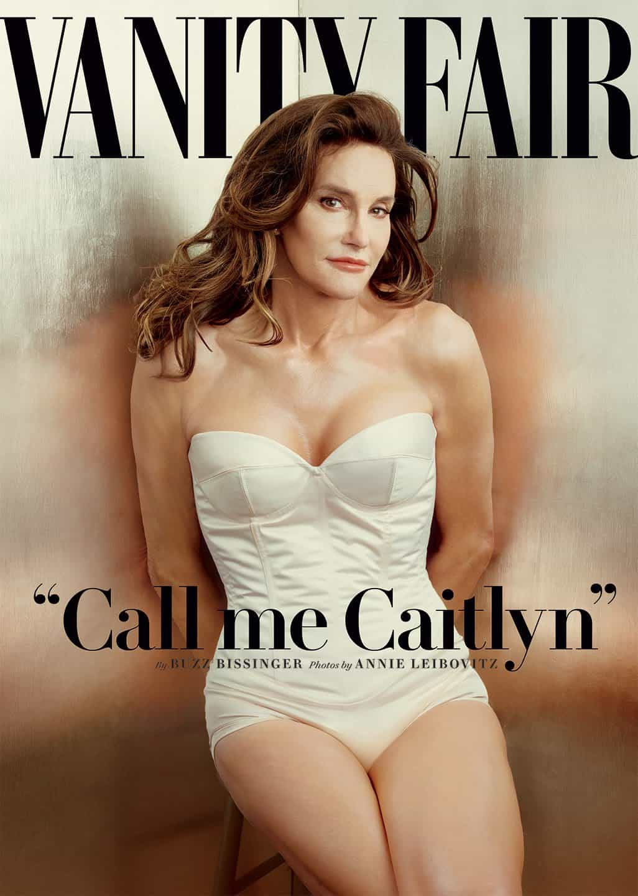

< < < Back
Smile When They Call You A Villain – Return Of Kings
Today we witness the inverted moral system of a deranged clique of tyrants doubling down on their suicidal plans to enslave and enfeeble anyone who thinks for themselves. Men, especially white men, are the constant targets of pin the tail on the donkey. Most lack the fortitude to stand on their own two feet. They crumble under the assault and become the next neophyte in the post modern death cult.
What A Hero Is

Before we get into the Villain, let’s discuss the Hero. What does it mean to be a hero today?
We see that it requires no lives saved. There are no violent battles and miraculous victories. There are no herculean feats attained. In fact today the proclamation of hero will be echoed across the world’s bullhorns for no other reason than being a male who likes to have sex with other males.
Maybe you woke up one day and decided, “Hey I don’t like this penis anymore. What I’m really craving is some tits and pumps!”
Not only will you be lauded a hero, you will likely be invited to the white house, visited by the pope and Skyped by the Dalai Lama.
The sight of a monstrously obese female wearing draperies as lingerie elicits the heartfelt pleas of adoration and praise from a coagulating mass of human entropy. Heroism has long been dead. The masses no longer have the upward striving of a young and energetic people. They languish fat and opulent holding their idols of greed and envy in fanatical devotion.
To be the best. To become the strongest. To go the farthest. These are called evil now. When a man accomplishes and succeeds in life, it must be due to some ism or archy. No one wishes to elevate upon their own merit. Everyone has an accusation to excuse their failures in life. Everyone demands special treatment in order to compete in the game.
Everyone fights for social status through virtue signaling and personal victimology. Whoever is the loudest whiner. Whoever cries the hardest has won the race.
The race to the absolute bottom.
In a degenerate and and loathsome society such as this, the new man shall embrace the label of the Villain.
Who A Villain Is
With such a perverse transvaluation of morality, you must defiantly smile when the weak label you a villain. Today you are declared such by our society if you prefer normal healthy, heterosexual relationships. If you wish to reproduce and have a large family you are a villain because, “Duh! The world is overpopulated dummy!”
You are a terrible and evil person if you were born having a certain skin color. Did you or your ancestors help to build Western Civilization? You should be sterilized and put in a concentration camp.
Did you accomplish anything today or excel above the complacent rabble of stray human animals begging for the government tit? You disgusting, twisted Villain! These people must never endure the systemic oppression of hurt feelings! You Nazi!
Males of the West, it’s time to grow up. It’s time you stop loading the guns that others are holding to your heads.
Outlaw’s Freedom
The suburbanite male and mommy’s basement dwelling brony are degenerate forms of life just waiting for the Reaper’s scythe to come cleaving through their dough boy skulls. For many a male, he exists as the cucked slave to his Matriarch. He has man’d up! He’s married that whore! Because it’s not her fault and bastards need a home too.
Oh you think they’ll call you a hero for that don’t you? Alas it wasn’t so, Johnny Fuckboy.
Now pay up.
There is no better time than now to cast off the idea that you should ever follow the rules. Or think this is what you’re “supposed” to do. No better time than now to unburden yourself this demeaning yoke. No better time to become the Villain. The social contract is broken. Our societies have betrayed us and they no longer speak on our behalf. We are no longer under any obligation to a hostile ruling elite.
I was born near the beginning of the millennial generation. Our parents told us multitudes of pretty lies and falsehoods. They told us to be good white knights and play fair. To be the heroic emotional tampon for the fickle female. To be the whipping boy for the world.
Our parents did not prepare us for the wasteland of their horrible choices. They were drunk on materialism, hedonism and consumerism. In a hypnotic daze from drugs and TV they regurgitated what was told to them about right and wrong, good and evil. All they did was make us disgustingly weak.
We were left to find out the hard way. For many this has resulted in their feeble backs crushed under the weight of the Leviathan. But for the savage few it means they will surpass everyone.
We are outlaws now. Notorious and infamous villains. A freedom the modern male can know. Only if he stops acting like a little bitch.
A Man’s Purpose
We brought glorious Order before. Now it’s crumbling.
What men naturally do is bring order to reality. This is a polarizing effect that triggers attraction in females. Today the State has supplanted the male as father and provider to his women. The only way to take this back is to live by your own rules. To have your own system with brothers who uphold it. You must become a rule unto yourself. The only way to do this is to become the unashamed Villain of today’s twisted satire called civilization.
This way of life does not belong to the weak and fearful. It belongs to the unrepentant. The bold and daring.
You must create your own order in your world. Do this and there will be no shortage of women. This was your purpose all along. As per usual, trust your instincts. If your heart naturally loathes something, hate it with all your heart and might. If it loves, love it furiously. Do not ever let anyone talk down to you. We built this world. When it burns to the ground we will build it again.
Do not suffer the weak to eat from your table.
Read More: How To Avoid Trouble When Living The Villain Lifestyle